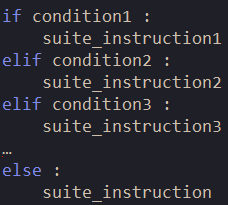
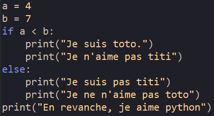
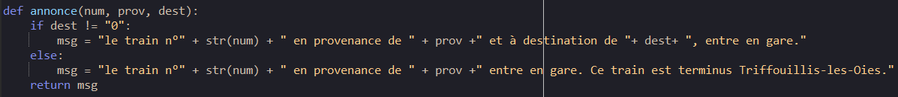

Nous allons maintenant étudier une structure fondamentale en programmation le « si ...... alors.......sinon........».
L'idée de base est la suivante :
Si "expression" est True alors "suite_instruction1" est exécuté et "suite_instruction2" est ignoré.
Sinon (sous-entendu que "expression" est False) "suite_instruction2" est exécuté et "suite_instruction1" est ignoré.
Notez l'indentation de «suite_instruction1» et de « suite_instruction2» et que le sinon est optionnel.
On peut aussi ajouter d’autres alternatives :
Soit le programme suivant :
Quel est le résultat attendu après l'exécution de ce programme ?
Vérifiez votre hypothèse en testant le programme.
Ecrire une fonction qui prend en paramètre un âge. Si age est supérieur ou égal à 18 ans, la fonction devra renvoyer la chaîne de caractères "Bonjour, vous êtes majeur.". Si age est inférieur à 18 ans, la fonction devra renvoyer "Bonjour, tu es mineur."
Soit le programme suivant :
Quel est le résultat attendu après l'exécution de ce programme si vous saisissez dans la console annonce(4557, "Paris", "Marseille") ?
Et si vous saisissez dans la console annonce(5768, "Bonneville", "0") ?
Vérifiez votre réponse en testant ce programme.
Vous êtes gérant d'un magasin et vous désirez écrire un programme Python qui calculera automatiquement le montant de la facture des clients. Tout client qui achète au moins 5 fois le même article se voit octroyer une remise de 5 % (uniquement sur le montant de l'achat de cet article). Afin de simplifier le problème, on considère qu'un client n'achète qu'un seul type d'article.
Écrire une fonction qui prend en paramètre le prix unitaire de l'article et le nombre d'articles achetés. Cette fonction doit renvoyer le montant de la facture.
Votre programme doit lire deux entiers et il doit afficher la distance séparant ces deux entiers. Notez que le résultat doit être un nombre positif ou nul.
Exemple : distance(152,189) renvoie la valeur 37 et distance(814,786) la valeur 28.